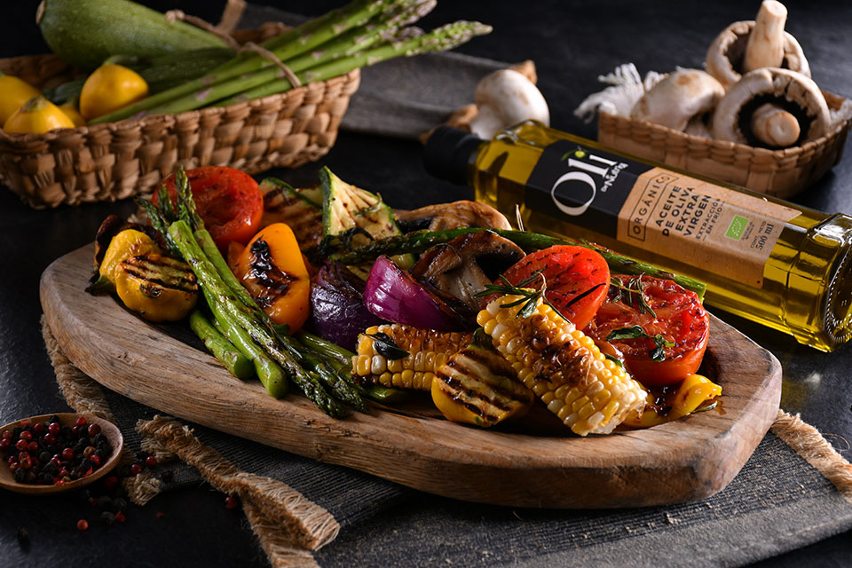

Tabla de vegetales
Recetas > Tabla de vegetales
Tabla de vegetales
Alimento estrella Espárragos: Los espárragos son ricos en minerales como fósforo, potasio y hierro, son un alimento alto en fibra y excelentes en antioxidantes que ayudan a reducir los niveles de colesterol, favoreciendo la salud cardiovascular.
El consumo regular de verduras puede generar un cambio realmente positivo en el estado de salud de una persona. Para ayudarte en esa tarea, te compartimos esta receta de parrillada de verduras, con la que podrás descubrir los beneficios de estos alimentos de una manera divertida.
Ingredientes
- 1/4 de taza de crema de vinagre balsamico.
- 1/4 de taza de aceite de oliva.
- Sal y pimienta recien molida.
- 1 rama de romero fresco, picado.
- 1 cdita. de orégano seco.
- La raspadura de 1 limón eureka.
- 1 pimiento rojo y 1 amarillo, cortado en cuartos.
- 12 espárragos, cortados a la mitad.
- 8 champiñones grandes, cortados por la mitad.
- 1 cebolla morada, cortada en cuartos.
- 3 calabazas, rebanadas a lo largo.
- 2 elotes amarillos, cortados en trozos.
- 8 calabacitas amarillas, cortadas por la mitad.
- 4 jitomates medianos, cortados en rebanadas gruesas.
Valor nutritivo por porción
- 283 kcal
- 16 de grasas
- 9 de proteinas
- 33 hidratos de carbono
Preparación
- Cortar las verduras como se indica en los ingredientes.
- Para la marinada coloca en una tazón la sal, la pimienta, la ralladura del limón, las hierbas de olor agregando aceite de oliva en forma de hilo y mezclando hasta homogeneizar.
- Coloca las verduras en la marinada y deja reposar al menos por 30 minutos.
- Calienta una parrilla y cocina las verduras a flama baja, sólo el tiempo necesario para que estén ligeramente cocidas.